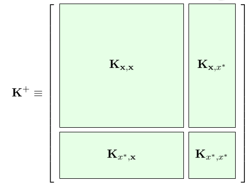
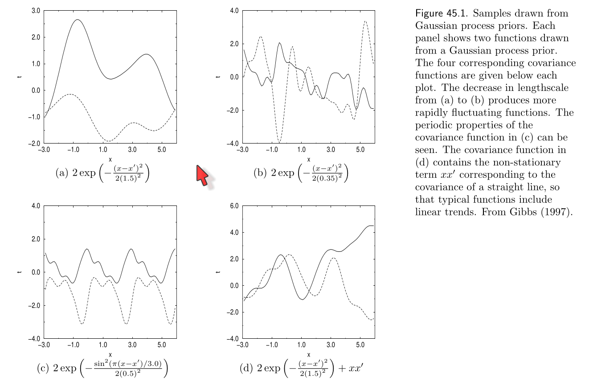
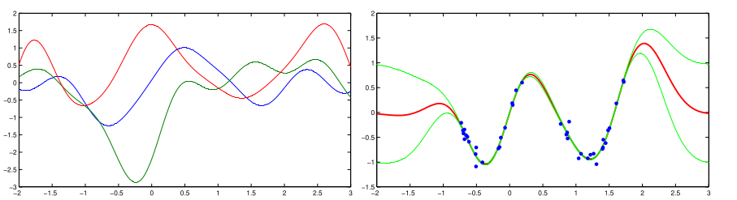

An theoretical introduction to Gaussian processes
Contents
An theoretical introduction to Gaussian processes¶
Motivation¶
Before training a neural network (deterministic or probabilistic) we have to select its architecture. For example, in the case of a multilayer perceptron (MLP), we need to choose the number of layers (depth) and the number of nodes (neurons) per layer (width)
Important
With this we are defining the neural network as a function with fixed structure
Increasing the width and depth gives the model more flexibility. But in general, we don’t know “how much flexibility” is needed for a particular problem
Note
The architecture is a collection of hyper-parameters
The good (and typical) practice is to find the “best structure” using a validation (holdout) dataset. But what if, instead of testing several architectures, we use a (non-parametric) model with no fixed structure?
This lesson presents the Gaussian Process (GP), a bayesian non-parametric model that can be seen as a neural network with one hidden layer and potentially infinite width
Note
In general, non-parametric models automatically grow in complexity (width) with data
Note that non-parametric models do have prior distributions and tunable hyper-parameters. The difference is that the distribution of its parameters lives in an infinite dimensional space. We use non-parametric models by integrating out (marginalizing) this infinite distribution
See also
Other non-parametric models not covered in this lesson are the many variants of the
Dirichlet Process
infinite Hidden Markov Model
Indian Buffer Process
See Zhoubin Ghahramadi’s tutorial for a presentation of these methods
Defining the Gaussian process¶
Consider the probabilistic linear regression problem from previous lessons
where \(\epsilon_i\) is iid Gausian and \(\phi_k\) is a collection of \(M\) (non-linear) basis functions
We can write this in matrix form as
where \(E\) is a diagonal matrix and \(\Phi(X) \in \mathbb{R}^{N \times M}\)
Let’s set a Gaussian prior for \(\theta\) :
What is the distribution of \(f_\theta(X) = \Phi(X) \theta\) in this case? If \(\Phi\) is a deterministic transformation then the distribution of \(f\) is also Gaussian
By our previous definitions, the mean of \(p(f)\) is
and its covariance is
where \(K \in \mathbb{R}^{N\times N}\) is a symmetric and positive-definite matrix called the Gram matrix or Gramian matrix.
The \(ij\)-th element of the gram matrix is
where \(\kappa(\cdot, \cdot): \mathcal{X} \times \mathcal{X} \to \mathbb{R}\) is called the kernel. In general we will forget about \(\{\phi_k(\cdot)\}\) and work only with the kernel.
With all these we can finally write
which is a “prior over functions”.
Note
We have dropped the dependence on \(\theta\)
Important
\(f\) is a multivariate random variable (random process) with joint Gaussian distribution: \(f\) is a Gaussian Process
Inference with a GP¶
Consider a dataset \(\textbf{x}=(x_1, x_2)\), \(\textbf{y}=(y_1, y_2)\). With this dataset we are interested in predicting (inferring) for a new observation \(x^*\): \(f(x^*)\) or \(f^*\) for short. This corresponds to the posterior \(p(f^*|\textbf{y}, \textbf{x}, x^*)\)
As before we can write the joint (Gaussian) distribution between the dataset and the new sample as
where
is a block matrix and
The Gaussian distribution is closed under conditioning, i.e. if we have a joint gaussian distribution the conditional distribution of a variable given the others is gaussian (nice step by step example). Here we use this property to write
which gives us the result we seek
We can use Gaussian conditioning to predict on several “new data points” at the same time, we only need to compute the sub gram matrices between and within the training set and the test set
{kind=link}
The kernel¶
The GP is mainly defined by its covariance also known as the gram matrix
where the following relation between the kernel and the basis function
is known as the “kernel trick”.
Before we defined a finite dimensional \(\vec \phi\) and obtained \(\kappa\). But in general it is more interesting to skip \(\phi\) and design \(\kappa\) directly. We only need \(\kappa\) to be a symmetric and positive-definite function
The broadly used Gaussian kernel complies with these restrictions
where hyperparameter \(\sigma\) controls the amplitude and \(\ell\) controls the length-scale of the interactions between samples.
Using a taylor expansion we can show that the (non-linear) basis function of this kernel is
i.e. the Gaussian kernel induces an infinite-dimensional basis function.
Note
A Gaussian process with Gaussian kernel has an implicit infinite dimensional parameter vector \(\theta\)
We are not anymore explicitely choosing the structure of the function, but by selecting a kernel we are choosing a general “behavior”. For example, the Gaussian kernels encodes the property of locality, i.e. closer data samples should have similar predictions.
Several other valid kernels exist which encode other properties such as trends and periodicity. The following picture from Mackay’s book shows some of them:
{kind=link}
The top plots are Gaussian kernels with different lengthscales
The bottom left plot is a periodic kernel
The bottom right plot is a Gaussian kernel plus a linear kernel
Note
Sums of products of valid kernels are also valid kernels
“Training” the GP¶
Fitting a GP to a dataset corresponds to finding the best combination of kernel hyperparameters which can be done by maximizing the marginal likelihood
For regression with iid Gaussian noise the marginal likelihood \(y\) is also Gaussian
where the hyperparameter \(\sigma_\epsilon^2\) is the variance of the noise
Note
It is equivalent and much easier to maximize the log marginal likelihood:
from which we compute derivatives to update the hyperparameters through gradient descent
The following picture from Barber’s book shows three examples drawn from the GP prior (gaussian kernel) on the left and the mean/variance of the GP posterior after training on the right
{kind=link}
Relation between GPs and Neural Networks¶
(Neil 1994) showed that a fully connected neural network with one hidden layer tends to a Gaussian process in the limit of infinite hidden units as a consequence of the central limit theorem. The following shows a mumary of the proof
More recently, several works have explored the relationship between GPs and Deep Neural Networks:
A recursive GP kernel that is related to infinitely-wide multi-layer dense neural networks. A similar relation is explored here. This paper relates the training of GP and BNN and show that a GP kernel can be obtained from VI (gaussian distributions), hence relating the posteriors
Deep Gaussian processes: Composition (stacks) of GPs. Note that this is not the same as function (kernel)composition. Excellent tutorial by Neil Lawrence that covers sparse and deep GPs. DGP are less used in practice than BNN due to their higher cost but they can be combined as shown here and also more efficient methods to train them have been proposed. Finally, the following is a
pyrodemonstration of a two layer DGP trained with MCMC: https://fehiepsi.github.io/blog/deep-gaussian-process/Neural Tangent Kernel (NTK): A modification to deep ensemble training so that they can be interpreted as a GP predictive posterior in the infinite width limit. The NTK was introduced in (Jacot, Gabriel and Hongler, 2018) as a description of the training evolution of deep NNs using kernel methods
Deep kernel learning: The inputs of a spectral mixture kernel are transformed with deep neural networks. Solution has a closed form and can replace existing kernels easily. Available as a
pyroexample
See also
For more on GP please see
Mackay’s book, chapter 45 on Gaussian Proceses
Barber’s book, chapter 19 on Gaussian Processes
Rasmussen & Willams, “Gaussian Process for Machine Learning”